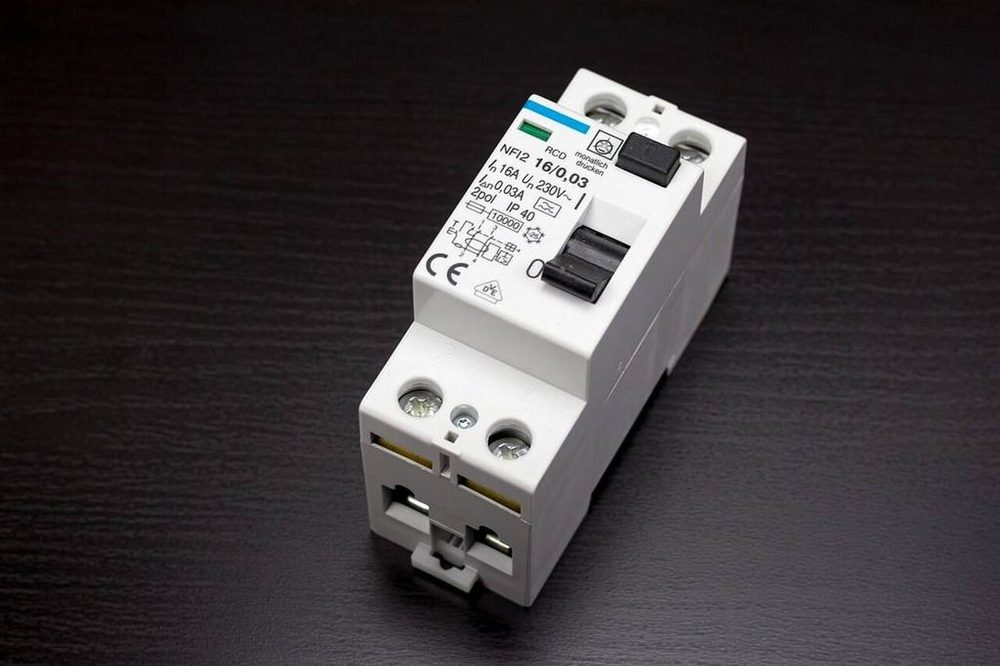
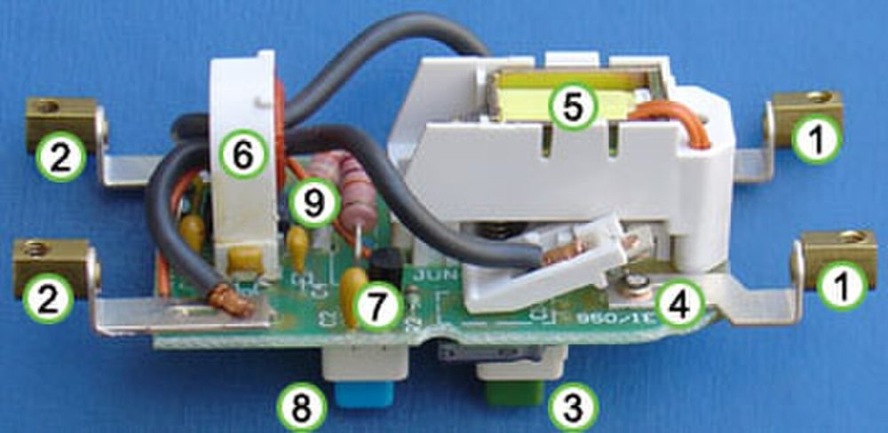
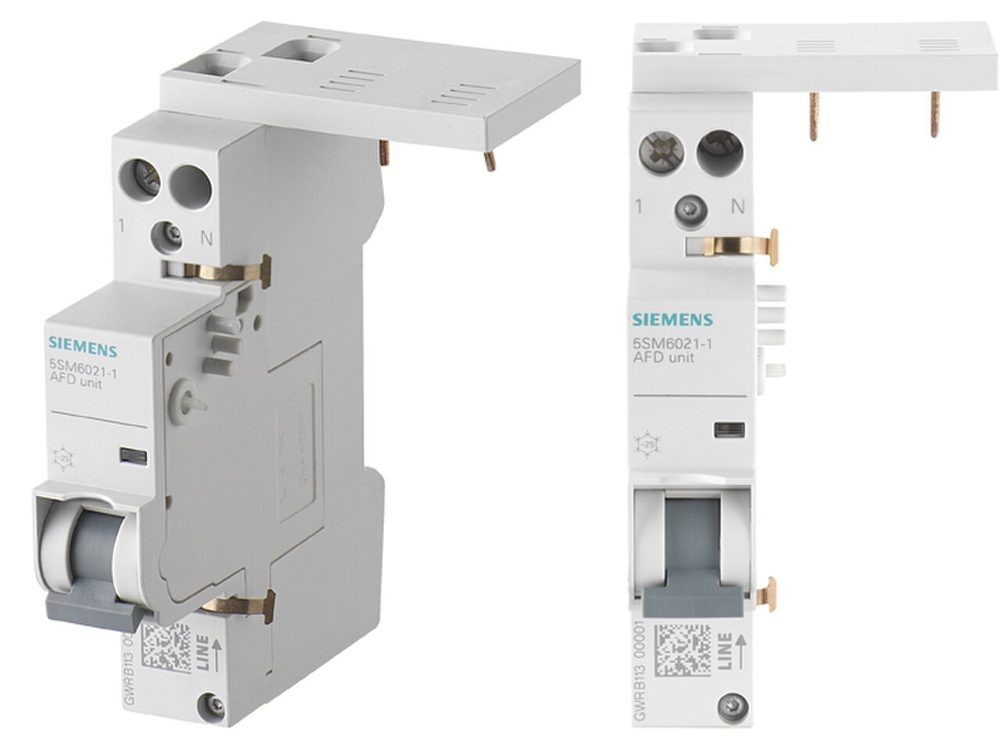
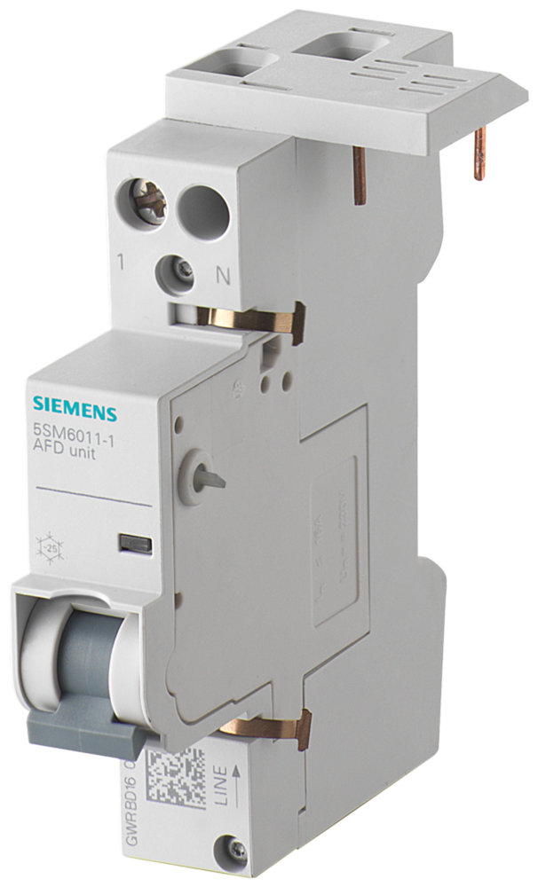
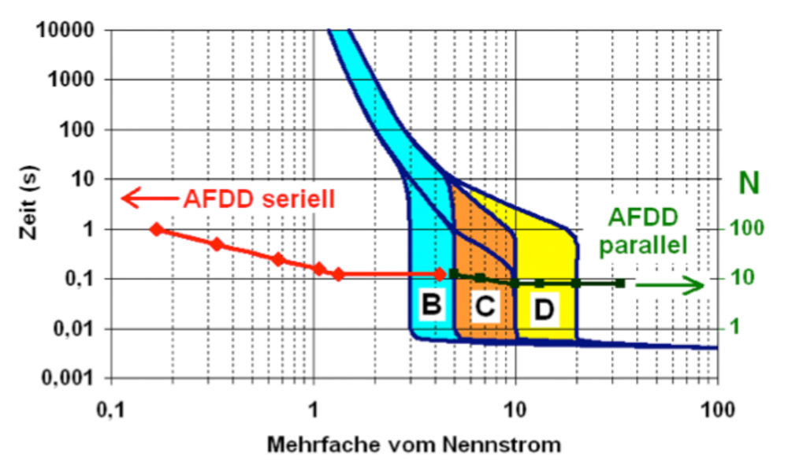
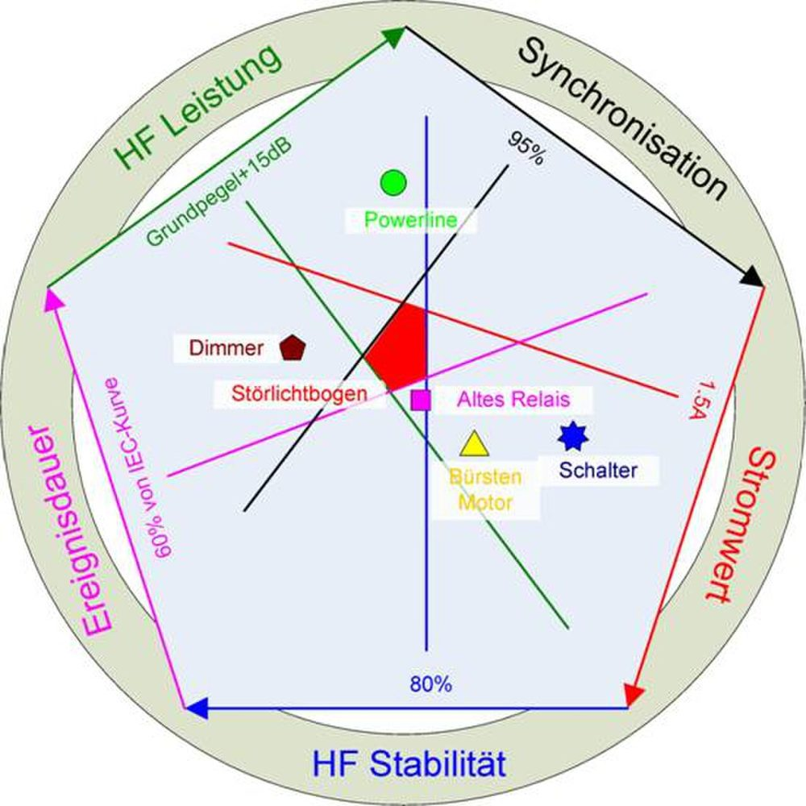

Instalații electrice · Protecția la curent diferențial rezidual
Tipurile de dispozitive diferențiale (DDR): AC, A, F, B
Un DDR (întreruptor sau bloc diferențial) declanșează când suma curenților pe conductoarele active nu mai este zero, adică o parte din curent „scapă” la pământ. Tipul DDR arată ce formă de undă a curentului de defect este capabil să sesizeze. Un consumator cu electronică poate produce un curent de defect pe care un DDR de tip AC nu îl „vede”.
Tip
Curent de defect sesizat
Simbol pe aparat
Unde se folosește
Exemple de consumatori
ACSR EN 61008 / 61009
DA alternativ sinusoidal 50 Hz
NU continuu pulsatoriu
NU continuu neted
Numai circuite cu sarcini clasice, fără electronică. Nu se mai recomandă ca protecție generală; în multe țări UE nu mai este admis la prize.
Încălzire cu rezistență, boiler simplu, iluminat cu incandescență, motoare mici comandate direct.
ASR EN 61008 / 61009
DA alternativ sinusoidal
DA continuu pulsatoriu (redresare monofazată)
NU continuu neted
Minimul obligatoriu pentru circuitele de prize și pentru orice consumator cu sursă în comutație sau variator monofazat. Este tipul standard în instalațiile noi.
Prize generale, mașină de spălat, plită cu inducție, calculator, TV, încărcătoare, iluminat LED cu driver, variatoare de lumină.
FSR EN 62423
DA tot ce sesizează tipul A
DA curenți cu frecvențe mixte (până la 1 kHz), din convertizoare monofazate
NU continuu neted
Consumatori cu convertizor de frecvență monofazat (alimentare 230 V, motor comandat electronic). Rezistent și la declanșări false din cauza supratensiunilor tranzitorii.
Pompă de căldură monofazată, aparat de aer condiționat cu invertor, mașină de spălat cu motor cu invertor, pompă de circulație cu turație variabilă.
BSR EN 60947-2 / 62423
DA tot ce sesizează tipul F
DA continuu neted
DA frecvențe până la 1 kHz (B+ până la 20 kHz)
Consumatori cu redresor trifazat sau cu curent continuu direct în circuit. Obligatoriu unde producătorul echipamentului îl cere. Nu se montează în aval de un DDR de tip A sau AC (curentul continuu i-ar satura miezul).
Convertizor de frecvență trifazat, stație de încărcare autovehicule electrice (fără protecție DC 6 mA integrată), invertor fotovoltaic fără transformator, UPS, ascensoare, aparatură medicală.
Întreruptor diferențial Legrand 40 A / 30 mA. Pe carcasă: simbolul sinusoidei = tip AC, schema internă cu transformatorul toroidal, butonul TEST. Foto: France64160, Wikimedia Commons, licență CC BY-SA 3.0

Bloc diferențial cu protecție la supracurent integrată (RCBO) 16 A / 30 mA. Un singur aparat înlocuiește MCB + DDR pe circuitul respectiv. Foto: Diermaier, Wikimedia Commons, licență CC0 1.0

Interiorul unui DDR: transformatorul toroidal prin care trec L și N (diferența de curent induce tensiune în înfășurarea secundară), releul de declanșare și circuitul butonului TEST. Foto: Ali@gwc.org.uk, Wikimedia Commons, licență CC BY-SA 3.0
Regula de reținut
Fiecare tip îl include pe cel de dinainte: AC ⊂ A ⊂ F ⊂ B. Un tip superior poate înlocui oricând un tip inferior, niciodată invers.
Sensibilitatea (IΔn) este altceva
Tipul (AC/A/F/B) se referă la forma de undă. Sensibilitatea se alege separat: 30 mA pentru protecția persoanelor (prize, băi, exterior), 100–300 mA pentru protecția la incendiu, pe tablou general.
De ce contează
Un curent de defect continuu pulsatoriu trece printr-un DDR de tip AC fără să-l declanșeze. Cu tot mai multă electronică în case, tipul AC lasă persoana neprotejată exact la consumatorii cei mai folosiți.
Ce spune normativul I7-2011
Normativ pentru proiectarea, execuția și exploatarea instalațiilor electrice aferente clădirilor (Ordinul MDRT 2741/2011, M. Of. 802 bis/2011; modificat prin Ordinul MDLPA 959/2023, M. Of. 512/2023). Capitolul 4.1.5.2: Protecția suplimentară prin deconectarea automată la apariția unui curent de defect periculos prin utilizarea DDR.
Art. 4.1.5.2.5
Tipurile de DDR pentru utilizări casnice și similare
Clasificarea dispozitivelor DDR pentru utilizări casnice și similare, conform recomandărilor SR EN 61008-1 și SR EN 61009-1, este: – de tip „AC” pentru care declanșarea este dată de curentul rezidual sinusoidal alternativ aplicat brusc sau care crește lent; – de tip „A” pentru care declanșarea este dată atât de curentul rezidual sinusoidal alternativ cât și de curentul rezidual continuu (pulsatoriu) aplicați brusc sau care cresc lent.
Art. 4.1.5.2.6
Tipurile de DDR pentru utilizări industriale
Clasificarea dispozitivelor DDR pentru utilizări industriale, conform recomandărilor din SR EN 60947-2, este: – de tip „AC” și „A” și suplimentar – de tip „B” pentru care declanșarea este dată de: curenți reziduali sinusoidali; curenți reziduali pulsatorii; curenți reziduali pulsatorii cu o componentă continuă de 6 mA; curenți reziduali care pot proveni de la circuite redresoare cum ar fi: redresor simplă alternanță cu sarcină capacitivă care produce un curent continuu neted; punte redresoare trifazată în stea sau punte hexafazată; punte redresoare dublă alternanță.
Tipul F nu apare în I7-2011; a fost introdus ulterior prin SR EN 62423.
Art. 4.1.5.2.1 (forma din 2023)
Unde este obligatoriu DDR ≤ 30 mA
În sistemele de tensiune alternativă trebuie prevăzută o protecție suplimentară printr-un DDR care nu depășește 30 mA pentru: – prize de utilizare generală și/sau receptoare electrice cu un curent nominal care nu depășește 32 A; – echipamente mobile pentru utilizări în exterior cu un curent nominal care nu depășește 32 A; – pentru circuitele de iluminat, în locuințele unifamiliale.
Art. 4.1.5.2.2 – 4.1.5.2.3
DDR-ul de 30 mA este protecție suplimentară, nu unică
Utilizarea DDR având un curent diferențial rezidual nominal care nu depășește 30 mA este recunoscută ca protecție suplimentară în cazul protecției de bază și/sau a protecției la defect sau din neatenția utilizatorilor. Utilizarea unor astfel de dispozitive nu este recunoscută ca un mijloc unic de protecție.
Art. 4.1.5.2.4
Valorile nominale IΔn
Curenții nominali ai DDR pentru utilizări casnice și similare conform SR EN 61008-1 și SR EN 61009-1 sunt: 6 – 10 – 30 – 100 – 300 – 500 mA și 1 A.
Art. 4.1.5.2.7
Fără temporizare / tip „S”
– fără temporizare, de uz general, cu timpi de declanșare între 40…300 ms; – cu temporizare tip „S” pentru asigurarea selectivității, cu timpi de declanșare între 150…500 ms.
Art. 4.1.5.2.8
Selectivitatea între DDR-uri
Selectivitatea între un dispozitiv de tip „S” și un altul de tip general în serie poate fi considerată realizată dacă raportul între curenții diferențiali reziduali nominali respectivi este de cel puțin 3.
Exemplu din fig. 4.2: 30 mA general → 300 mA tip S → 1 A cu temporizare definită.
Art. 4.1.4.1.11 (2023)
DDR în rețele TN
Un DDR nu trebuie utilizat în rețelele TN-C. Dacă se utilizează un DDR într-o rețea TN-C-S, montarea DDR se face numai pe partea rețelei TN-S.
Art. 7.9.11 – 7.9.12
Amplasamente medicale: numai tip A sau B
Circuitele terminale din amplasamentele din grupa 1 cu curent nominal până la 32 A trebuie prevăzute cu dispozitive diferențiale de maximum 30 mA. […] Dispozitivele diferențiale prescrise la art. 7.9.11 și 7.9.12 trebuie să fie numai de tip A sau B.
Art. 7.11.7 – 7.11.8
Instalații fotovoltaice: tip B
Când o instalație electrică conține un sistem de alimentare PV fără cel puțin o separare simplă între zona de tensiune alternativă și cea de tensiune continuă, DDR-ul instalat pentru a asigura protecția în caz de defect prin întreruperea automată a alimentării trebuie să fie de tip B. Când construcția invertorului PV nu permite trecerea curentului continuu de defect în instalația electrică nu este necesară prevederea unui DDR.
Art. 4.2.2.8 (2023)
DDR pentru reducerea riscului de incendiu
Se recomandă utilizarea DDR având curentul nominal de funcționare stabilit în funcție de caracteristicile instalației, amplasate în tablourile de distribuție. Dispozitivul se prevede obligatoriu la clădiri de învățământ, sănătate, comerț, construcții de turism, construcții din lemn, clădiri de producție/depozitare cu risc mare de incendiu, cluburi, săli aglomerate, clădiri înalte, clădiri de cult și cultură monument istoric.
Art. 4.1.5.8 și 4.2.2.10 – 4.2.2.12 (2023)
AFDD completează DDR-ul
Un defect de arc electric în serie nu implică nicio scurgere spre pământ. În consecință, dispozitivele diferențiale reziduale DDR nu pot să detecteze acest tip de defect.
De aceea, din 2023, pe circuitele finale ≤ 32 A din dormitoare, spații de sănătate, construcții din lemn, muzee și depozite cu risc de incendiu se prevăd AFDD, la originea circuitului.
Completare 2023 · SR EN 62606 · I7 art. 4.1.5.8 și 4.2.2.10–12
AFDD – dispozitivul de detectare a defectului de arc electric
Întreruptorul automat vede supracurentul, DDR-ul vede curentul spre pământ. Un arc electric într-un cablu strivit sau într-o clemă slăbită nu produce, de regulă, nici una, nici alta: curentul rămâne cel al consumatorului și circulă între conductoarele active. AFDD-ul este al treilea aparat, care „ascultă” forma curentului.
Cele trei tipuri de arc. Primele două nu produc nici supracurent, nici curent spre pământ; doar AFDD-ul le poate opri.Semnătura arcului în forma de undă a curentului. AFDD-ul măsoară curentul printr-un senzor și îl analizează cu un microprocesor.Ce este în interiorul unui AFDD. Din anul 2023, I7 admite trei variante: aparat unic, aparat cu protecție integrată (MCB / DDR / RCBO cu AFDD) sau unitate asamblată la montaj.Sub 2,5 A arcul nu este detectat (energie considerată insuficientă pentru aprindere). Cu cât curentul e mai mare, cu atât AFDD-ul trebuie să deconecteze mai repede.Protecția completă a unui circuit final: MCB + DDR tip A 30 mA + AFDD. Fiecare aparat acoperă ce nu văd celelalte două.

AFDD Siemens SENTRON 5SM6 cuplat pe un întreruptor automat monofazat: unitatea AFD (sus, 1 modul) preia curentul și comandă declanșarea aparatului de dedesubt. Foto: Ariel Dyfort, Wikimedia Commons, licență CC BY-SA 3.0

Unitatea AFD 5SM6011-1 singură. Se asamblează la montaj cu un MCB sau cu un RCBO (varianta c) din I7 art. 4.1.5.8.1). Foto: Siemens Low and Medium Voltage, Wikimedia Commons, licență CC BY-SA 3.0

Caracteristica de declanșare: linia roșie (AFDD pentru arc în serie) acoperă zona de curenți mici, sub 1 In, unde curbele B, C, D ale MCB nu declanșează niciodată; arcul în paralel (verde) e acoperit la curenți mai mari. Foto: Siemens BT Low and Medium Voltage, Wikimedia Commons, licență CC BY-SA 3.0

Criteriile de decizie ale microprocesorului: putere HF, sincronizare cu rețeaua, valoare curent, stabilitate HF, durata evenimentului. Arcul de defect (roșu) le îndeplinește pe toate; variatorul, motorul cu perii sau întrerupătorul doar câte unul. Foto: Ariel Dyfort, Wikimedia Commons, licență CC BY-SA 3.0
Cauze tipice de arc
Cablu străpuns de cui sau șurub, cablu strivit de mobilier sau de ușă, clemă slăbită în doză, priză uzată, izolație îmbătrânită, cablu ros de rozătoare, vibrații, umiditate. Toate produc un contact „prost”, nu un scurtcircuit franc.
Unde este obligatoriu (I7 2023 / IEC 60364-4-42)
Circuite finale de c.a. ≤ 32 A din dormitoare și spații de dormit (hoteluri, cămine, grădinițe), spații de sănătate, construcții din lemn, muzee și clădiri istorice, depozite cu risc de incendiu, adăposturi de animale. Recomandat pe restul circuitelor finale.
Ce NU face AFDD-ul
Nu înlocuiește MCB-ul sau DDR-ul. Nu vede arcuri sub 2,5 A și nici supraîncălzirea unei conexiuni fără arc. Pe circuite cu multe surse în comutație vechi pot apărea declanșări intempestive; LED-ul de diagnoză de pe aparat arată cauza ultimei declanșări.
Sursa punctului de plecare: Schneider Electric România, FAQ FA136084. Articolele din I7-2011 sunt reproduse după textul normativului (M. Of. 802 bis/2011) și după Ordinul 959/2023 (M. Of. 512/2023). Tipul F: SR EN 62423. AFDD: SR EN 62606, Ghidul instalațiilor electrice Schneider (electrical-installation.org), catalog tehnic ABB AFDD.